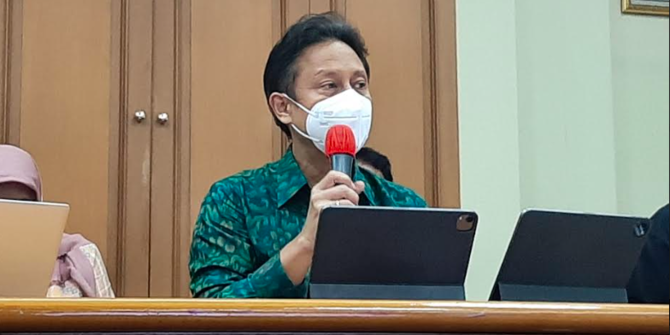
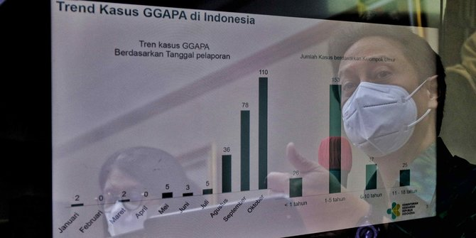

Pada 13 Oktober 2022, bayi Aisyah diberi dua jenis obat. Parasetamol sirop dan antibiotik. Obat resep dokter untuk meredakan batuk, pilek, dan demam yang sudah menyerangnya selama tiga hari. Obat bereaksi cukup cepat. Namun bukan menyembuhkan. Justru mempersulit pencernaan. "Anak saya itu mengalami penurunan intensitas pembuangan baik BAB (buang air besar) dan buang air kecil," cerita Nedy, ayah Aisyah pada 20 Oktober 2022. Setelah pencernaan terganggu, Aisyah enggan makan dan minum. Tubuhnya terkulai lemas. Sebagai orang tua, Nedy cemas melihat kondisi putrinya yang baru berusia 10 bulan. Dia membawa putrinya berobat ke salah satu rumah sakit di Jakarta Timur. Petugas rumah sakit mengambil sampel darah Aisyah untuk dicek di laboratorium. Beberapa jam kemudian, hasilnya keluar. Campak dan Demam Berdarah Dengue (DBD). Aisyah menjalani perawatan di rumah sakit. Sehari berlalu, Aisyah tak kunjung sembuh. Justru kondisinya mencemaskan. Timbul bercak putih di mulut, elektrolit merosot, bagian tubuh tertentu membengkak, darah mengental, urine tak keluar. Kecemasan Nedy bertambah besar. Dia meminta tenaga medis kembali melakukan pengecekan darah putrinya. Butuh dua jam menunggu hasil laboratorium. "Kami terkejut. Hasilnya fungsi ginjalnya meningkat, fungsi hatinya meningkat," ucap Nedy. Perlahan, tenaga medis memberikan pemahaman kepada Nedy. Kondisi yang dialami Aisyah sangat mirip dengan gejala gangguan ginjal akut progresif atipikal. Tingkat keparahan pasien dengan gangguan ginjal akut progresif atipikal berbeda-beda. Bila pasien mengalami gejala ringan, kemungkinan besar ginjalnya bisa disembuhkan total. Namun, bila tergolong berat, memerlukan banyak tindakan medis. Kemungkinan terburuk, tidak bisa diselamatkan. Gejala ringan gangguan ginjal akut progresif atipikal yakni demam, mual, muntah. Untuk gejala sedang, demam, mual, muntah, dan sedikit mengeluarkan urine. Sementara gejala berat, sama sekali tak bisa memproduksi urine. "Banyak yang meninggal karena betul-betul yang stadium berat," kata Juru Bicara Kementerian Kesehatan Mohammad Syahril.

Kasus Gagal Ginjal Akut Naik, Menkes:
|

Gagal Ginjal yang
|
Polisi Tangkap Dua Pemeran Video Porno
|
DPR akan Panggil Kapolri Terkait Isu
|